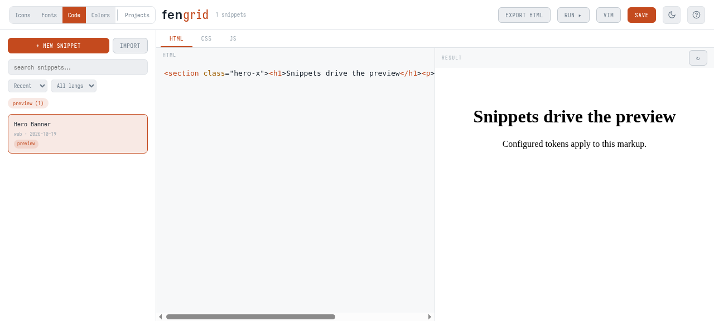
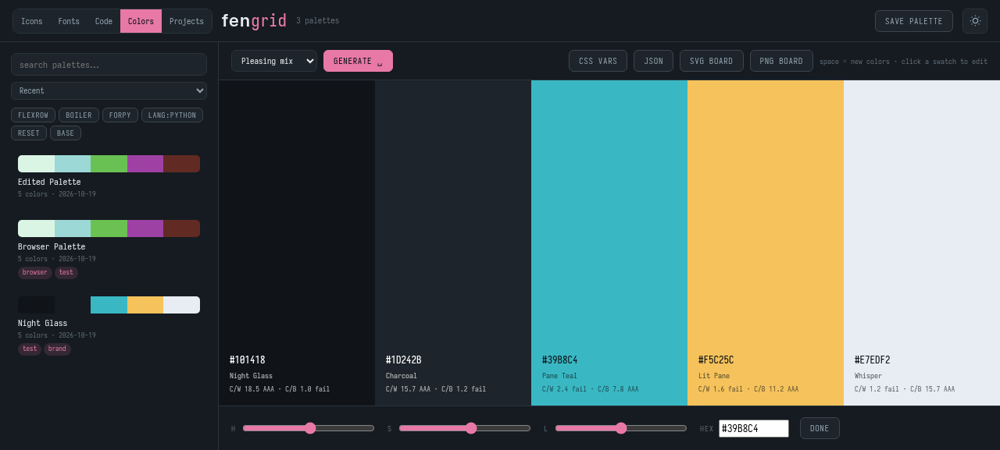
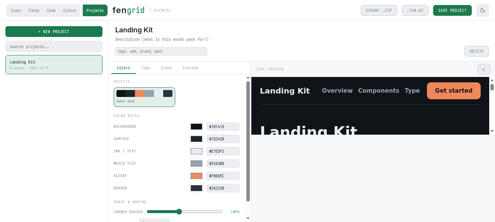

Every asset
on your machine,
on one grid.
fengrid is the UI asset explorer: it turns everything on your machine into a grid. Icons, fonts, code snippets, color palettes — every frontend asset you own, laid out, searchable, and inspectable on one local page. No cloud, no account, no build step. Every card is a window: tap one and you're through the glass — variants, dimensions, path, export.
git clone https://github.com/fengrid/fengrid.git && cd fengrid && bash install.sh
Scans your installed theme folders (e.g. /usr/share/icons) and offers to add more; asks before anything it changes, needs no sudo.
git clone https://github.com/fengrid/fengrid.git && cd fengrid && bash install.sh
Same installer as Linux. macOS .icns system icons are converted with the built-in sips tool; CoreTypes icons are picked up automatically. No sudo.
git clone https://github.com/fengrid/fengrid.git ; cd fengrid ; powershell -ExecutionPolicy Bypass -File install.ps1
The execution-policy bypass applies to the installer process only. You pick which folders of .png / .svg / .ico files to browse; nothing is installed system-wide.

What it does
- Any asset sourceSystem theme folders or any folder you keep — png, svg, ico, plus icns/xpm via built-in converters.
- Import icon setsPull sets from a local folder, a zip archive, a git repository or archive URL, or browse 200+ open-source icon sets with licenses shown. Imported sets are scanned for metadata automatically.
- Size sliderSnaps to standard icon sizes — 16 through 256.
- Search & filterBy name and your own tags, source folder (with counts), context, file type, and color vs. monochrome.
- Tags & collectionsDefine your own tags and collections, then filter and search by them. Saved per-browser.
- Hover / tap inspectorName, theme, context, true pixel dimensions, every size variant, file size, colorspace, color count, full path — tap works on phones.
- ExportDownload any icon as PNG, JPEG, WebP, ICO, PDF and more, at any size — ImageMagick does the conversion when served over the LAN.
- One-click copyCorner button on every card copies the icon's name.
- QR webshareOptional local webserver; scan a QR code to browse the showcase on your phone over the LAN.
- Mobile layoutResponsive controls, swipeable filter chips, big touch targets, one-tap control collapse for a full-page grid.
- Not a CSS frameworkfengrid is a grid of your assets — an explorer, not a grid-layout generator.
- Fully localSelf-hosted fonts, no CDN, no framework. Works offline over file://.
Five panes, one grid
- IconsThe original pane: every icon on your machine in one searchable grid, with metadata, tags, collections, and any-format export.
- FontsThe typeface explorer. Scans your font folders (or links to them in place), groups everything by family with regular-face previews, shows details per style — weights, slants, glyph counts — and copies or downloads in one click.
- CodeThe snippet explorer: a live HTML/CSS/JS playground that saves to a local snippet database. Import straight from VSCode or massCode; emacs and vim editing modes included.
- ColorsThe palette explorer. Roll harmonious palettes, lock and edit individual colors, and export to CSS variables, JSON, or image boards.
- ProjectsThe asset coordinator. Pull fonts, palettes, and icons from the other panes into one project, tune shape and naming, and preview it live — then export everything as a reusable package.


